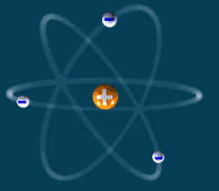
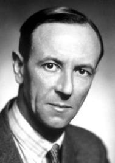
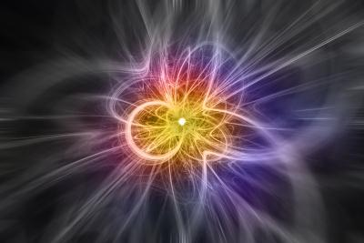
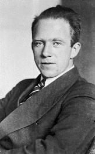
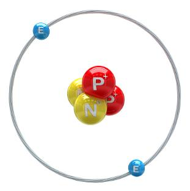
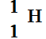
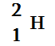
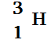
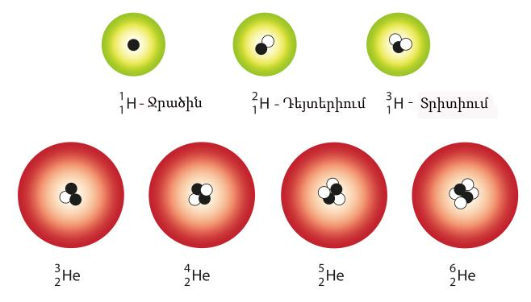
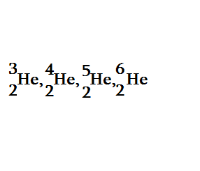

37. Ատոմի միջուկի կառուցվածքը
Ատոմի միջուկի կառուցվածքը
Ինչպես արդեն գիտեք, ատոմը կազմված է միջուկից և էլեկտրոնային թաղանթից: Ատոմն էլեկտրաչեզոք է, քանի որ էլեկտրոնների գումարային լիցքը համակշռում է միջուկի դրական լիցքը:

Ատոմի բնութագրական չափը 10 −10 մ է, իսկ միջուկինը՝ 10 −15 մ, այսինքն ատոմի միջուկի շառավիղը մոտ 100000 անգամ փոքր է ատոմի շառավղից: Չնայած դրան, ատոմի զանգվածը գործնականում հավասար է միջուկի զանգվածին:
Ատոմի միջուկը ունի բարդ կառուցվածք. այն բաղկացած է առանձին մասնիկներից, որոնք կոչվում են նուկլոններ:
1913թ Ռեզերֆորդն առաջարկեց վարկած, համաձայն որի բոլոր քիմիական տարրերի միջուկներում պարունակվում են ջրածնի միջուկներ: Նրանց Ռեզերֆորդը անվանեց պրոտոն:
Պրոտոնը դրական լիցքավորված մասնիկ է, որի զանգվածը 1836 անգամ մեծ է էլեկտրոնի զանգվածից, իսկ լիցքը հավասար է էլեկտրոնի լիցքի մոդուլին:
qp=e=1,6 −19Կլ
Տարբեր ատոմների միջուկները պարունակում են տարբեր թվով պրոտոններ: Ատոմի միջուկի զանգվածը հավասար չէ, այլ ավելի մեծ է այն կազմող պրոտոնների գումարային զանգվածից: Հետևաբար ատոմների միջուկներում բացի պրոտոններից կան նաև այլ մասնիկներ:
1932թ անգլիացի գիտնական Ջեյմս Չեդվիկը փորձով հայտնաբերեց մի նոր մասնիկ, որի զանգվածը 1839 անգամ մեծ է էլեկտրոնի զանգվածից, այսինքն մոտավորապես հավասար է պրոտոնի զանգվածին, իսկ լիցք չունի: Այդ մասնիկին նա անվանեց նեյտրոն:


Նեյտրոնի հայտնագործումից հետո, Վիկտոր Համբարձումյանի, Դմիտրի Իվանենկոյի և Վեռներ Հայզենբերգի կողմից առաջարկվեց միջուկների կառուցվածքի պրոտոն-նեյտրոնային մոդելը, որը հետագայում հիմնավորվեց բազմաթիվ փորձերով:


Համաձայն այդ մոդելի.
Ատոմի միջուկը կազմված է պրոտոններից և նեյտրոններից: Պրոտոնների թիվը միջուկում համընկնում է Մենդելեևի քիմիական տարրերի աղյուսակում տվյալ տարրի կարգաթվի՝ Z-ի հետ: Կարգաթվի հետ է համընկնում նաև ատոմում էլեկտրոնների թիվը:

Նեյտրոնների թիվը միջուկում նշանակում են N տառով:
Միջուկի պրոտոնների Z թվի և նեյտրոնների N թվի գումարն անվանում են միջուկի զանգվածային թիվ և նշանակում A տառով:
A=Z+N
Միջուկում նեյտրոնների թիվը հավասար է միջուկի զանգվածային թվի և պրոտոնների թվի տարբերությանը:
N=A−Z
Այն քիմիական տարրերը, որոնք ունեն նույն կարգաթիվը, այսինքն նույն թվով պրոտոններ, սակայն տարբեր ատոմային զանգվածներ, կոչվում են իզոտոպներ:
Միևնույն քիմիական տարրի իզոտոպները միմյանցից տարբերվում են նեյտրոնների թվով:
Օրինակ՝ ջրածնի  իզոտոպներն են դեյտերիումը՝  և տրիտիումը՝ 

Ջրածնի միջուկը կազմված է 1 պրոտոնից, դեյտերիումինը՝ 1 պրոտոնից և 1 նեյտրոնից:
Տրետիումի միջուկը կազմում են 1 պրոտոն և 2 նեյտրոնը:
Հայտնի նաև He-ի 4 իզոտոպներ՝

Ուշադրություն
Պրոտոնների թվով պայմանավորված է ատոմի քիմիական հատկությունները, իսկ նեյտրոնների թվով՝ տվյալ քիմիական տարրի ատոմային զանգվածը: